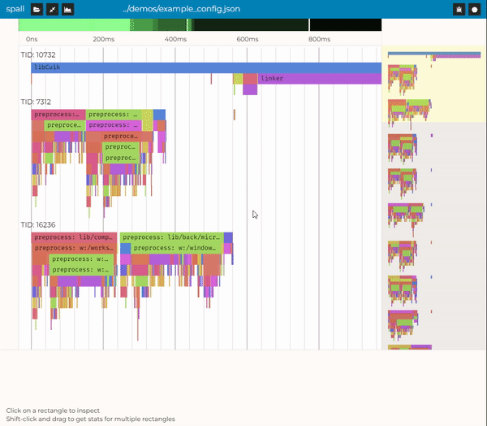
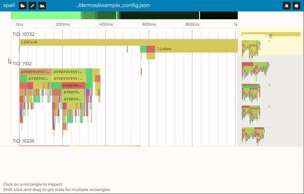
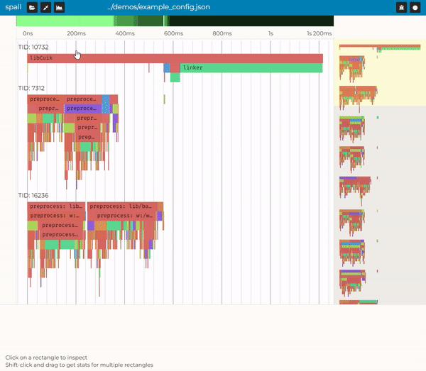

This is spall loading a 200 MB trace file and getting basic runtime stats for about a minute of recorded program runtime in real-time
Heads up! Spall isn't a great user-experience on mobile due to the serious memory and screen constraints most mobile devices have. If you've got a laptop or a desktop, you should use that instead!
For Web-Profiler Vets
If you're an old-hat with chrome://tracing, speedscope, or perfetto, you should feel right at home.
spall supports most of the chrome://tracing/speedscope/perfetto JSON format. You should be able to get
off and running with your existing files, feel free to jump right in.
For Everybody Else
If you'd like more of a briefer on profilers and how to use spall, keep reading!
Profilers typically come in two flavors, sampling or tracing (or sometimes a hybrid of the two). spall (at least right now) is a tracing profiler, which means that to use it, you mark down when your functions begin and end, write them to a file, and then spall will render them out on a timeline for you.
spall includes a small, single-header C library
here
to make that easy. For relatively simple programs using clang or gcc, you can
use -finstrument-functions to instrument your whole program quickly.
More language support is planned soon, so keep an eye out!
There are some very simple examples over here.
Basic Features
Once you've got your program instrumented, you can drag-and-drop or click "open file" at the top left, and select your .spall or .json file, and get started.
Navigation

Clicking and dragging moves the view around and scrolling zooms in and out
Event Selection
Clicking on an event brings up some basic information about it
Event Multiselection
Shift-click allows you to select a chunk of events to run stats on
Get All Stats
Clicking on the "get stats for the whole file" button at the top left runs stats for your whole program
That's All!
You've got the basics at this point, go have fun!